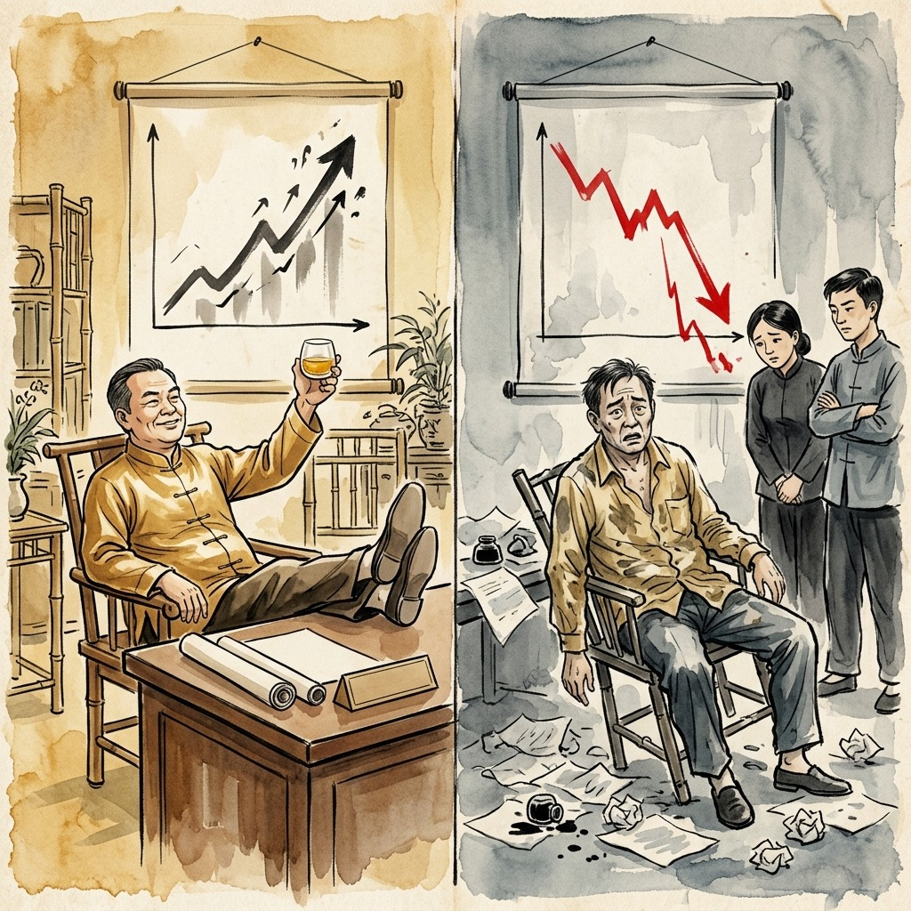
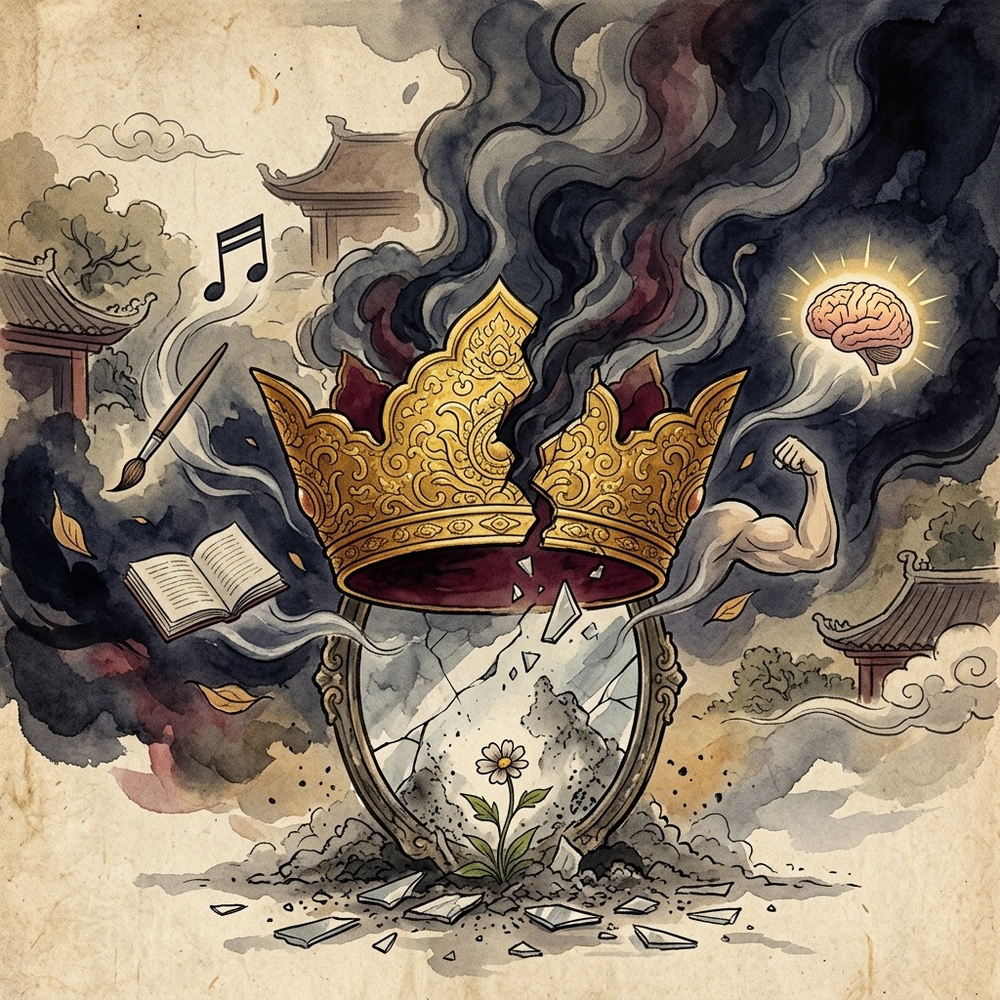
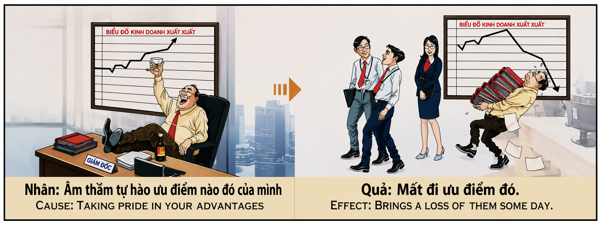

La Corona Que Se Quiebra The Crown That Shatters La Corona Che Si Spezza 破碎的王冠 التاج الذي ينكسر Корона, которая разбивается Die Krone, die zerbricht La Couronne Qui Se Brise 砕ける王冠 A Coroa Que Se Parte Vương Miện Vỡ Tan
"Quien se enorgullece en secreto de sus virtudes, despierta al demonio que las devora; porque el orgullo es la polilla del talento." "Whoever secretly prides himself on his virtues awakens the demon that devours them; because pride is the moth of talent." "Chi segretamente si vanta delle proprie virtù risveglia il demone che le divora; perché l'orgoglio è la falena del talento." “那些暗自夸耀自己美德的人，会唤醒吞噬他们的恶魔；因为骄傲是人才的飞蛾。” "من يفتخر سرًا بفضائله يوقظ الشيطان الذي يلتهمها. لأن الكبرياء هو فراشة الموهبة." «Кто тайно гордится своими добродетелями, пробуждает демона, пожирающего их; потому что гордость — мотылек таланта.». „Wer heimlich stolz auf seine Tugenden ist, weckt den Dämon, der sie verschlingt; denn Stolz ist die Mutter des Talents.“ « Celui qui se vante secrètement de ses vertus réveille le démon qui les dévore ; parce que la fierté est la mite du talent. » 「自分の美徳を密かに誇る者は、それを貪り食う悪魔を目覚めさせます。なぜなら、プライドは才能の源だからです。」 "Quem secretamente se orgulha de suas virtudes desperta o demônio que o devora; porque o orgulho é a traça do talento." "Ai thầm tự hào về đức tính của mình thì đánh thức con quỷ đang ăn thịt họ; bởi vì niềm tự hào là con sâu bướm của tài năng."
Hay un veneno que no necesita ser ingerido para matar: se llama orgullo secreto. No es la vanidad ruidosa del que presume en público, sino algo mucho más sutil y letal: esa voz interior que susurra «yo soy mejor, yo soy más listo, yo tengo algo que los demás no tienen». Es el placer silencioso de compararse con los demás y saberse superior. Y el karma, que lee los pensamientos con la misma precisión con que lee los actos, tiene reservada para este pecado invisible una sentencia quirúrgica: te quitará exactamente aquello de lo que te enorgulleces.
El mecanismo es de una precisión aterradora porque actúa sobre la ley de la impermanencia: todo lo que posees —tu inteligencia, tu belleza, tu salud, tu éxito profesional— es un préstamo temporal del universo. Cuando lo reconoces con gratitud y humildad, el préstamo se renueva. Cuando lo reclamas como mérito propio y te regodeas en secreto de poseerlo, el universo retira lo prestado. No por crueldad, sino por equilibrio. Es como si el sol se enorgulleciera de dar luz: en el momento exacto en que el sol creyera que la luz le pertenece, dejaría de brillar. Así funciona el karma del orgullo: no castiga al que tiene, sino al que cree que merece tener.
La pérdida que describe este karma es especialmente dolorosa porque destruye lo que más amas de ti mismo. Si te enorgulleces secretamente de tu inteligencia, vendrá un día en que tu mente se nuble. Si te enorgulleces de tu belleza, el tiempo la borrará con una velocidad que asombrará a todos. Si te enorgulleces de tu negocio exitoso, los gráficos que hoy suben se desplomarán mañana. La única protección posible es la gratitud radical: saber que cada talento, cada virtud, cada ventaja que posees no te pertenece, sino que fluye a través de ti como el agua fluye por un río. El río que se cree dueño del agua, se seca.
There is a poison that does not need to be ingested to kill: it is called secret pride. It is not the loud vanity of one who brags in public, but something much more subtle and lethal: that inner voice that whispers "I am better, I am smarter, I have something that others don't have." It is the silent pleasure of comparing yourself with others and knowing yourself to be superior. And karma, which reads thoughts with the same precision with which it reads actions, has a surgical sentence in store for this invisible sin: it will take away from you exactly what you are proud of.
The mechanism is terrifyingly precise because it acts on the law of impermanence: everything you possess—your intelligence, your beauty, your health, your professional success—is a temporary loan from the universe. When you acknowledge it with gratitude and humility, the loan is renewed. When you claim it as your own merit and secretly revel in possessing it, the universe takes back what you borrowed. Not out of cruelty, but out of balance. It is as if the sun took pride in giving light: at the exact moment the sun believed that the light belonged to it, it would stop shining. This is how the karma of pride works: it does not punish those who have, but rather those who believe they deserve to have.
The loss this karma describes is especially painful because it destroys what you love most about yourself. If you secretly pride yourself on your intelligence, there will come a day when your mind becomes clouded. If you take pride in your beauty, time will erase it with a speed that will amaze everyone. If you take pride in your successful business, the charts that rise today will plummet tomorrow. The only protection possible is radical gratitude: knowing that every talent, every virtue, every advantage you possess does not belong to you, but flows through you like water flows through a river. The river that thinks it owns the water dries up.
Esiste un veleno che non ha bisogno di essere ingerito per uccidere: si chiama orgoglio segreto. Non è la vanità chiassosa di chi si vanta in pubblico, ma qualcosa di molto più subdolo e letale: quella voce interiore che sussurra "Io sono più bravo, sono più intelligente, ho qualcosa che gli altri non hanno". È il piacere silenzioso di confrontarsi con gli altri e di sapersi superiori. E il karma, che legge i pensieri con la stessa precisione con cui legge le azioni, ha in serbo una frase chirurgica per questo peccato invisibile: ti toglierà esattamente ciò di cui sei fiero.
Il meccanismo è terribilmente preciso perché agisce secondo la legge dell’impermanenza: tutto ciò che possiedi – la tua intelligenza, la tua bellezza, la tua salute, il tuo successo professionale – è un prestito temporaneo dell’universo. Quando lo riconosci con gratitudine e umiltà, il prestito si rinnova. Quando lo rivendichi come un tuo merito e segretamente ti godi nel possederlo, l'universo si riprende ciò che hai preso in prestito. Non per crudeltà, ma per squilibrio. È come se il sole fosse orgoglioso di donare la luce: nel momento esatto in cui il sole credesse che la luce gli appartenesse, smetterebbe di splendere. Il karma dell’orgoglio funziona così: non punisce chi ha, ma piuttosto chi crede di meritare di avere.
La perdita descritta da questo karma è particolarmente dolorosa perché distrugge ciò che ami di più di te stesso. Se segretamente ti vanti della tua intelligenza, arriverà il giorno in cui la tua mente si annebbierà. Se sei orgoglioso della tua bellezza, il tempo la cancellerà con una velocità che stupirà tutti. Se sei orgoglioso del tuo business di successo, le classifiche che salgono oggi precipiteranno domani. L'unica protezione possibile è la gratitudine radicale: sapere che ogni talento, ogni virtù, ogni vantaggio che possiedi non ti appartiene, ma scorre attraverso di te come l'acqua scorre in un fiume. Il fiume che crede di possedere l'acqua si secca.
有一种毒，不需要吃下去就能杀人：它叫秘密骄傲。 It is not the loud vanity of one who brags in public, but something much more subtle and lethal: that inner voice that whispers "I am better, I am smarter, I have something that others don't have."这是一种将自己与他人进行比较并知道自己更胜一筹的无声的快乐。而业力，以与解读行为同样的精确度解读思想，为这种看不见的罪恶准备了一个外科手术判决：它会从你身上夺走你引以为豪的东西。
这个机制极其精确，因为它遵循无常法则：你所拥有的一切——你的智慧、你的美丽、你的健康、你的职业成功——都是来自宇宙的暂时贷款。当您以感激和谦卑的态度承认这一点时，贷款就会得到更新。当你声称它是你自己的优点并暗自陶醉于拥有它时，宇宙就会收回你借来的东西。不是出于残酷，而是出于平衡。就好像太阳以发出光为荣：当太阳相信光属于它的那一刻，它就会停止发光。这就是骄傲的业力如何运作的：它不会惩罚那些拥有的人，而是惩罚那些认为自己应该拥有的人。
这种业力所描述的损失尤其痛苦，因为它摧毁了你最爱的自己。如果你暗自自豪自己的聪明才智，总有一天你的心会变得阴暗。如果你对自己的美丽感到自豪，时间会以令所有人惊讶的速度抹去它。如果你为自己的成功事业感到自豪，那么今天上升的排行榜明天就会暴跌。唯一可能的保护是彻底的感激：知道你拥有的每一项才能、每一项美德、每一项优势都不属于你，而是像水流过河流一样流经你。认为自己拥有水源的河流干涸了。
هناك سم لا يحتاج إلى تناوله للقتل: إنه يسمى الكبرياء السري. إنه ليس الغرور الصاخب الذي يتفاخر به علناً، بل هو شيء أكثر دهاءً وفتكاً: ذلك الصوت الداخلي الذي يهمس "أنا أفضل، أنا أكثر ذكاءً، لدي ما لا يملكه الآخرون". إنها المتعة الصامتة المتمثلة في مقارنة نفسك بالآخرين ومعرفة أنك متفوق. والكارما، التي تقرأ الأفكار بنفس الدقة التي تقرأ بها الأفعال، لديها جملة جراحية تخبئها لهذه الخطيئة غير المرئية: سوف تنزع منك بالضبط ما تفتخر به.
الآلية دقيقة بشكل مرعب لأنها تعمل وفقًا لقانون عدم الثبات: كل ما تمتلكه – ذكائك، جمالك، صحتك، نجاحك المهني – هو قرض مؤقت من الكون. وعندما تعترفون بذلك بامتنان وتواضع، يتجدد القرض. عندما تطالب بها كجدارة خاصة بك وتستمتع سرًا بامتلاكها، فإن الكون يستعيد ما اقترضته. ليس من باب القسوة، بل من باب التوازن. يبدو الأمر كما لو أن الشمس تفتخر بإعطاء الضوء: في اللحظة التي تعتقد فيها الشمس أن الضوء يخصها، ستتوقف عن السطوع. هذه هي الطريقة التي تعمل بها كارما الفخر: فهي لا تعاقب من يملكون، بل أولئك الذين يعتقدون أنهم يستحقون ذلك.
إن الخسارة التي تصفها هذه الكارما مؤلمة بشكل خاص لأنها تدمر أكثر ما تحبه في نفسك. إذا كنت تفتخر سرًا بذكائك، فسوف يأتي يوم يصبح فيه عقلك مشوشًا. إذا كنتِ تفتخرين بجمالك فإن الزمن سوف يمحيه بسرعة تدهش الجميع. إذا كنت تفتخر بعملك الناجح، فإن الرسوم البيانية التي ترتفع اليوم ستنخفض غدًا. الحماية الوحيدة الممكنة هي الامتنان الجذري: معرفة أن كل موهبة، وكل فضيلة، وكل ميزة تمتلكها لا تنتمي إليك، ولكنها تتدفق من خلالك كما يتدفق الماء عبر النهر. النهر الذي يظن أنه يملك الماء يجف.
Есть яд, который не нужно глотать, чтобы убить: он называется тайной гордостью. Это не громкое тщеславие хвастающегося на публике, а нечто гораздо более тонкое и смертоносное: тот внутренний голос, который шепчет: «Я лучше, я умнее, у меня есть то, чего нет у других». Это молчаливое удовольствие сравнивать себя с другими и осознавать свое превосходство. И карма, считывающая мысли с той же точностью, с которой она читает действия, припасла хирургический приговор за этот невидимый грех: она отнимет у вас именно то, чем вы гордитесь.
Этот механизм пугающе точен, поскольку действует по закону непостоянства: все, чем вы обладаете — ваш интеллект, ваша красота, ваше здоровье, ваш профессиональный успех — является временным кредитом у Вселенной. Когда вы признаете это с благодарностью и смирением, кредит возобновляется. Когда вы называете это своей заслугой и тайно наслаждаетесь этим, Вселенная забирает то, что вы одолжили. Не из жестокости, а из равновесия. Это как если бы солнце гордилось тем, что дает свет: в тот самый момент, когда солнце поверило, что свет принадлежит ему, оно переставало светить. Вот как работает карма гордости: она наказывает не тех, кто имеет, а тех, кто считает, что заслуживает иметь.
Потеря, которую описывает эта карма, особенно болезненна, потому что она разрушает то, что вы больше всего любите в себе. Если вы втайне гордитесь своим интеллектом, наступит день, когда ваш разум затуманится. Если вы гордитесь своей красотой, время сотрет ее со скоростью, которая поразит всех. Если вы гордитесь своим успешным бизнесом, то графики, которые растут сегодня, завтра резко упадут. Единственная возможная защита — это радикальная благодарность: знание того, что каждый талант, каждая добродетель, каждое преимущество, которым вы обладаете, не принадлежит вам, а течет через вас, как вода течет через реку. Река, которая думает, что она владеет водой, высыхает.
Es gibt ein Gift, das zum Töten nicht eingenommen werden muss: Es wird geheimer Stolz genannt. Es ist nicht die laute Eitelkeit von jemandem, der in der Öffentlichkeit prahlt, sondern etwas viel subtileres und tödlicheres: diese innere Stimme, die flüstert: „Mir geht es besser, ich bin schlauer, ich habe etwas, was andere nicht haben.“ Es ist das stille Vergnügen, sich mit anderen zu vergleichen und zu wissen, dass man überlegen ist. Und Karma, das Gedanken mit der gleichen Präzision liest, mit der es Handlungen liest, hält für diese unsichtbare Sünde ein chirurgisches Urteil bereit: Es wird Ihnen genau das nehmen, worauf Sie stolz sind.
Der Mechanismus ist erschreckend präzise, weil er auf dem Gesetz der Vergänglichkeit beruht: Alles, was Sie besitzen – Ihre Intelligenz, Ihre Schönheit, Ihre Gesundheit, Ihr beruflicher Erfolg – ist eine vorübergehende Leihgabe aus dem Universum. Wenn Sie dies mit Dankbarkeit und Demut anerkennen, wird das Darlehen verlängert. Wenn Sie es als Ihr eigenes Verdienst beanspruchen und sich insgeheim daran erfreuen, es zu besitzen, nimmt das Universum zurück, was Sie geliehen haben. Nicht aus Grausamkeit, sondern aus dem Gleichgewicht. Es ist, als wäre die Sonne stolz darauf, Licht zu spenden: Genau in dem Moment, in dem die Sonne glaubte, dass das Licht ihr gehöre, würde sie aufhören zu scheinen. So funktioniert das Karma des Stolzes: Es bestraft nicht diejenigen, die es haben, sondern diejenigen, die glauben, dass sie es verdienen.
Der Verlust, den dieses Karma beschreibt, ist besonders schmerzhaft, weil er das zerstört, was du an dir am meisten liebst. Wenn Sie insgeheim stolz auf Ihre Intelligenz sind, wird der Tag kommen, an dem Ihr Geist getrübt wird. Wenn Sie stolz auf Ihre Schönheit sind, wird die Zeit sie mit einer Geschwindigkeit auslöschen, die jeden in Erstaunen versetzen wird. Wenn Sie stolz auf Ihr erfolgreiches Unternehmen sind, werden die Charts, die heute steigen, morgen abstürzen. Der einzig mögliche Schutz ist radikale Dankbarkeit: das Wissen, dass jedes Talent, jede Tugend, jeder Vorteil, den Sie besitzen, nicht Ihnen gehört, sondern durch Sie fließt wie Wasser durch einen Fluss. Der Fluss, der glaubt, das Wasser zu besitzen, trocknet aus.
Il existe un poison qu’il n’est pas nécessaire d’ingérer pour tuer : on l’appelle l’orgueil secret. Ce n'est pas la vanité bruyante de celui qui se vante en public, mais quelque chose de beaucoup plus subtil et mortel : cette voix intérieure qui murmure "Je vais mieux, je suis plus intelligent, j'ai quelque chose que les autres n'ont pas". C'est le plaisir silencieux de se comparer aux autres et de se savoir supérieur. Et le karma, qui lit les pensées avec la même précision qu'il lit les actions, réserve une sentence chirurgicale à ce péché invisible : il vous enlèvera exactement ce dont vous êtes fier.
Le mécanisme est d’une précision terrifiante car il agit sur la loi de l’impermanence : tout ce que vous possédez – votre intelligence, votre beauté, votre santé, votre réussite professionnelle – est un emprunt temporaire de l’univers. Lorsque vous le reconnaissez avec gratitude et humilité, le prêt est renouvelé. Lorsque vous le revendiquez comme votre propre mérite et que vous vous réjouissez secrètement de le posséder, l’univers reprend ce que vous avez emprunté. Pas par cruauté, mais par déséquilibre. C'est comme si le soleil était fier de donner de la lumière : au moment précis où il croyait que la lumière lui appartenait, elle cesserait de briller. C’est ainsi que fonctionne le karma de l’orgueil : il ne punit pas ceux qui ont, mais plutôt ceux qui croient mériter d’avoir.
La perte décrite par ce karma est particulièrement douloureuse car elle détruit ce que vous aimez le plus chez vous. Si vous êtes secrètement fier de votre intelligence, il viendra un jour où votre esprit deviendra obscurci. Si vous êtes fier de votre beauté, le temps l’effacera à une vitesse qui étonnera tout le monde. Si vous êtes fier de la réussite de votre entreprise, les classements qui montent aujourd’hui chuteront demain. La seule protection possible est la gratitude radicale : savoir que chaque talent, chaque vertu, chaque avantage que vous possédez ne vous appartient pas, mais coule à travers vous comme l'eau coule dans une rivière. La rivière qui croit posséder l’eau s’assèche.
殺すために摂取する必要のない毒があります。それは秘密のプライドと呼ばれます。 It is not the loud vanity of one who brags in public, but something much more subtle and lethal: that inner voice that whispers "I am better, I am smarter, I have something that others don't have."それは、自分を他人と比較し、自分が優れていると知ることの静かな喜びです。そして、行動を読み取るのと同じ精度で思考を読み取るカルマには、この目に見えない罪に対する外科的宣告が用意されています。それはまさにあなたが誇りに思っているものをあなたから奪うことになります。
このメカニズムは恐ろしく正確です。なぜならそれは無常の法則に基づいて機能するからです。つまり、あなたが持っているすべてのもの、つまり知性、美しさ、健康、職業上の成功は、宇宙からの一時的な借り物なのです。感謝と謙虚さをもってそれを認めると、融資は更新されます。あなたがそれを自分のメリットだと主張し、密かにそれを所有することを楽しむとき、宇宙はあなたが借りたものを取り戻します。残虐性からではなく、バランスを崩しているからです。それはあたかも太陽が光を与えることに誇りを持っているかのようです。太陽がその光が自分のものであると信じたその瞬間に、太陽は輝きを止めます。これがプライドのカルマの仕組みです。プライドは持っている人を罰するのではなく、むしろ持つに値すると信じる人を罰します。
このカルマが表す喪失は、あなたが自分自身について最も愛しているものを破壊するものであるため、特に痛みを伴います。自分の知性を密かに誇ると、いつか心が曇る日が来るでしょう。自分の美しさに誇りを持っていれば、時間は誰もが驚くようなスピードでそれを消し去ります。自分のビジネスが成功していることに誇りを持っていれば、今日上昇したチャートは明日には急落するでしょう。可能な唯一の保護は徹底的な感謝です。あなたが持っているすべての才能、すべての美徳、すべての利点はあなたのものではなく、水が川を流れるようにあなたの中を流れていることを知ることです。自分たちの水だと思っている川は干上がってしまいます。
Existe um veneno que não precisa ser ingerido para matar: chama-se orgulho secreto. Não é a vaidade barulhenta de quem se vangloria em público, mas algo muito mais sutil e letal: aquela voz interior que sussurra “Sou melhor, sou mais inteligente, tenho algo que os outros não têm”. É o prazer silencioso de se comparar com os outros e saber que é superior. E o carma, que lê os pensamentos com a mesma precisão com que lê as ações, tem uma sentença cirúrgica reservada para esse pecado invisível: tirará de você exatamente aquilo de que você se orgulha.
O mecanismo é terrivelmente preciso porque atua de acordo com a lei da impermanência: tudo o que você possui – sua inteligência, sua beleza, sua saúde, seu sucesso profissional – é um empréstimo temporário do universo. Quando você reconhece isso com gratidão e humildade, o empréstimo é renovado. Quando você reivindica isso como seu próprio mérito e secretamente se deleita em possuí-lo, o universo pega de volta o que você emprestou. Não por crueldade, mas por desequilíbrio. É como se o sol se orgulhasse de dar luz: no exato momento em que o sol acreditasse que a luz lhe pertencia, ele deixaria de brilhar. É assim que funciona o carma do orgulho: ele não pune quem tem, mas sim quem acredita que merece ter.
A perda que esse carma descreve é especialmente dolorosa porque destrói o que você mais ama em você. Se você secretamente se orgulha de sua inteligência, chegará o dia em que sua mente ficará turva. Se você se orgulha de sua beleza, o tempo irá apagá-la com uma velocidade que surpreenderá a todos. Se você se orgulha de seu negócio bem-sucedido, os gráficos que sobem hoje cairão amanhã. A única proteção possível é a gratidão radical: saber que cada talento, cada virtude, cada vantagem que você possui não lhe pertence, mas flui através de você como a água flui por um rio. O rio que pensa ser dono da água seca.
Có một loại thuốc độc không cần uống vào cũng có thể giết chết: đó là niềm kiêu hãnh thầm kín. Đó không phải là sự phù phiếm ồn ào của một người khoe khoang trước công chúng, mà là một thứ gì đó tinh tế và nguy hiểm hơn nhiều: giọng nói bên trong thì thầm "Tôi tốt hơn, tôi thông minh hơn, tôi có thứ mà người khác không có." Đó là niềm vui thầm lặng khi so sánh bản thân với người khác và biết mình vượt trội hơn. Và nghiệp báo, đọc suy nghĩ với độ chính xác tương tự như đọc hành động, có một bản án phẫu thuật dành cho tội lỗi vô hình này: nó sẽ lấy đi chính xác những gì bạn tự hào về bạn.
Cơ chế này cực kỳ chính xác vì nó hoạt động theo quy luật vô thường: mọi thứ bạn sở hữu - trí thông minh, sắc đẹp, sức khỏe, thành công trong nghề nghiệp của bạn - đều là một khoản vay tạm thời từ vũ trụ. Khi bạn thừa nhận nó với lòng biết ơn và khiêm tốn, khoản vay sẽ được gia hạn. Khi bạn cho rằng đó là công lao của chính mình và bí mật say sưa sở hữu nó, vũ trụ sẽ lấy lại những gì bạn đã mượn. Không phải vì tàn ác mà là mất cân bằng. Như thể mặt trời kiêu hãnh ban phát ánh sáng: vào đúng thời điểm mặt trời tin rằng ánh sáng thuộc về nó thì nó sẽ ngừng chiếu sáng. Đây là cách nghiệp kiêu ngạo hoạt động: nó không trừng phạt những người có mà là những người tin rằng họ xứng đáng có được.
Sự mất mát mà nghiệp chướng này mô tả đặc biệt đau đớn vì nó phá hủy những gì bạn yêu quý nhất ở bản thân. Nếu bạn thầm tự hào về trí thông minh của mình, sẽ có một ngày tâm trí bạn trở nên u ám. Nếu bạn tự hào về vẻ đẹp của mình, thời gian sẽ xóa nhòa nó với tốc độ khiến mọi người phải kinh ngạc. Nếu bạn tự hào về công việc kinh doanh thành công của mình, bảng xếp hạng tăng lên hôm nay sẽ tụt dốc vào ngày mai. Cách bảo vệ duy nhất có thể có là lòng biết ơn triệt để: biết rằng mọi tài năng, mọi đức tính, mọi lợi thế bạn có không thuộc về bạn mà chảy qua bạn như nước chảy qua sông. Con sông tưởng mình sở hữu nước sẽ khô cạn.
El Director y el Jardinero
The Director and the Gardener
Il Direttore e il Giardiniere
导演与园丁
المدير والبستاني
Директор и садовник
Der Direktor und der Gärtner
Le directeur et le jardinier
監督と庭師
O Diretor e o Jardineiro
Giám đốc và người làm vườn
En la ciudad de Đà Nẵng vivía un hombre llamado Trung, director de la empresa exportadora más exitosa de la región. Su oficina ocupaba el último piso de un edificio de cristal desde donde podía ver todo el puerto. Cada trimestre, cuando los gráficos de ventas subían, Trung se reclinaba en su sillón de cuero italiano, se servía un whisky japonés y pensaba —nunca lo decía en voz alta, porque era demasiado astuto para eso—: «Soy un genio. Nadie en esta ciudad podría hacer lo que yo hago. Los demás directores son hormigas comparados conmigo». Externamente, Trung era modesto: hablaba con suavidad, vestía sin ostentación, donaba a obras benéficas. Pero por dentro, su ego ocupaba más espacio que todo el edificio de cristal.
En el jardín de su empresa trabajaba un anciano llamado Ông Tám, que llevaba treinta años podando los mismos árboles. Trung jamás le había dirigido la palabra; para él, un jardinero era invisible. Pero Ông Tám observaba todo desde sus arbustos: veía cómo Trung trataba a sus empleados con una cortesía que era en realidad condescendencia, cómo revisaba las cifras con una sonrisa que era en realidad autoadoración, cómo caminaba por los pasillos con una humildad que era en realidad orgullo disfrazado. Un día, Ông Tám se acercó a Trung mientras este esperaba su coche y le dijo: «Señor director, ¿puedo darle un consejo? Cuide sus raíces. Un árbol que solo se enorgullece de sus ramas termina cayendo con el primer viento fuerte». Trung sonrió con condescendencia y respondió: «Gracias, abuelo, pero yo no soy un árbol».
Seis meses después, un competidor descubrió un error que Trung había cometido por exceso de confianza: una cláusula contractual que él consideraba brillante resultó ser ilegal. La empresa perdió su licencia de exportación. Los gráficos se desplomaron. Los inversores huyeron. Los empleados, que nunca lo habían respetado de verdad sino solo temido, lo abandonaron uno a uno. Trung se quedó sentado en su sillón italiano, en una oficina vacía, mirando el puerto que ya no le pertenecía. El whisky japonés ya no tenía sabor. Los gráficos en la pared eran una línea roja cayendo al vacío como la trayectoria de un avión sin motor.
Una mañana, al llegar a la empresa cerrada, encontró a Ông Tám podando los mismos arbustos de siempre, como si nada hubiera cambiado. «¿Por qué sigue viniendo, abuelo? Ya no hay empresa que pague su sueldo», preguntó Trung con la voz rota. El viejo jardinero se levantó, se limpió las manos en el delantal y respondió: «Porque los árboles no saben de quiebras, señor director. Ellos siguen creciendo porque no se enorgullecen de crecer. Yo sigo podando porque no me enorgullezco de podar. El día que usted deje de enorgullecerse de dirigir, tal vez pueda volver a dirigir algo. Pero esta vez, con las raíces firmes». Trung se arrodilló junto al viejo entre la tierra mojada, y por primera vez en su vida, pidió que alguien le enseñara algo. No negocios, no estrategia, no liderazgo: pidió que le enseñara a podar un árbol sin sentirse superior al árbol.
In the city of Đà Nẵng lived a man named Trung, director of the most successful export company in the region. His office occupied the top floor of a glass building from where he could see the entire port. Every quarter, when the sales charts went up, Trung would lean back in his Italian leather chair, pour himself a Japanese whiskey, and think—he never said it out loud, because he was too clever for that—“I'm a genius. Nobody in this city could do what I do. "The other directors are ants compared to me." Outwardly, Trung was modest: he spoke softly, dressed without ostentation, donated to charity. But inside, his ego took up more space than the entire glass building.
An old man named Ông Tám worked in his company's garden, who had been pruning the same trees for thirty years. Trung had never spoken to him; to him, a gardener was invisible. But Ông Tám watched it all from his bushes: he saw how Trung treated his employees with a courtesy that was really condescension, how he reviewed the figures with a smile that was really self-adoration, how he walked through the corridors with a humility that was really pride in disguise. One day, Ông Tám approached Trung while he was waiting for his car and said, “Mr. Director, can I give you some advice? Take care of your roots. "A tree that is only proud of its branches ends up falling with the first strong wind." Trung smiled condescendingly and replied, "Thank you, Grandpa, but I'm not a tree."
Six months later, a competitor discovered a mistake Trung had made out of overconfidence: a contractual clause he considered brilliant turned out to be illegal. The company lost its export license. The charts plummeted. The investors fled. The employees, who had never truly respected him but only feared him, abandoned him one by one. Trung sat in his Italian armchair, in an empty office, looking at the port that no longer belonged to him. Japanese whiskey no longer had any flavor. The graphics on the wall were a red line falling into the void like the trajectory of a plane without an engine.
One morning, when he arrived at the closed company, he found Ông Tám pruning the same bushes as always, as if nothing had changed. «Why do you keep coming, Grandpa? There is no company that pays his salary anymore,” Trung asked, his voice breaking. The old gardener stood up, wiped his hands on his apron and replied: "Because trees don't know about bankruptcies, Mr. Director. They continue to grow because they are not proud of growing. I continue pruning because I don't take pride in pruning. The day you stop taking pride in directing, maybe you can direct something again. But this time, with firm roots. Trung knelt next to the old man in the wet earth, and for the first time in his life, he asked someone to teach him something. Not business, not strategy, not leadership: he asked me to teach him how to prune a tree without feeling superior to the tree.
Nella città di Đà Nẵng viveva un uomo di nome Trung, direttore della società di esportazione di maggior successo della regione. Il suo ufficio occupava l'ultimo piano di un edificio di vetro da dove poteva vedere l'intero porto. Ogni trimestre, quando le classifiche di vendita salivano, Trung si appoggiava allo schienale della sua poltrona di pelle italiana, si versava un whisky giapponese e pensava - non lo diceva mai ad alta voce, perché era troppo intelligente per farlo - "Sono un genio. Nessuno in questa città potrebbe fare quello che faccio io. Gli altri registi sono formiche rispetto a me". Esternamente Trung era modesto: parlava a bassa voce, si vestiva senza ostentazione, faceva donazioni in beneficenza. Ma dentro, il suo ego occupava più spazio dell'intero edificio di vetro.
Nel giardino della sua azienda lavorava un vecchio di nome Ông Tám, che potava gli stessi alberi da trent'anni. Trung non gli aveva mai parlato; per lui il giardiniere era invisibile. Ma Ông Tám osservava tutto dai suoi cespugli: vedeva come Trung trattava i suoi dipendenti con una cortesia che era davvero condiscendenza, come esaminava le cifre con un sorriso che era davvero autoadorazione, come attraversava i corridoi con un'umiltà che era in realtà orgoglio sotto mentite spoglie. Un giorno, Ông Tám si avvicinò a Trung mentre stava aspettando la sua macchina e disse: "Signor direttore, posso darle un consiglio? Abbi cura delle tue radici. "Un albero che è orgoglioso solo dei suoi rami finisce per cadere al primo forte vento". Trung sorrise con condiscendenza e rispose: "Grazie, nonno, ma non sono un albero".
Sei mesi dopo, un concorrente scoprì un errore commesso da Trung per eccessiva sicurezza: una clausola contrattuale che considerava brillante si rivelò illegale. L'azienda ha perso la licenza di esportazione. Le classifiche sono crollate. Gli investitori sono fuggiti. I dipendenti, che non lo avevano mai veramente rispettato ma solo temuto, lo abbandonarono uno dopo l'altro. Trung sedeva nella sua poltrona italiana, in un ufficio vuoto, guardando il porto che non gli apparteneva più. Il whisky giapponese non aveva più alcun sapore. La grafica sul muro era una linea rossa che cadeva nel vuoto come la traiettoria di un aereo senza motore.
Una mattina, quando arrivò all'azienda chiusa, trovò Ông Tám che potava gli stessi cespugli di sempre, come se nulla fosse cambiato. «Perché continui a venire, nonno? Non c'è più nessuna azienda che gli paghi lo stipendio", chiese Trung con la voce rotta. Il vecchio giardiniere si alzò, si asciugò le mani sul grembiule e rispose: "Perché gli alberi non sanno di bancarotta, signor direttore. Continuano a crescere perché non sono orgogliosi di crescere. Continuo a potare perché non sono orgoglioso della potatura. Il giorno in cui smetterai di essere orgoglioso di dirigere, forse potrai dirigere di nuovo qualcosa. Ma questa volta con radici salde. Trung si inginocchiò accanto al vecchio sulla terra bagnata e, per la prima volta nella sua vita, chiese a qualcuno di insegnargli qualcosa. Non business, non strategia, non leadership: mi ha chiesto di insegnargli a potare un albero senza sentirsi superiore all'albero.
在达南市住着一位名叫特朗的人，他是该地区最成功的出口公司的董事。他的办公室位于一栋玻璃建筑的顶层，从那里他可以看到整个港口。每个季度，当销售排行榜上升时，特朗都会靠在他的意大利皮椅上，给自己倒一杯日本威士忌，然后想——他从不大声说出来，因为他太聪明了——“我是个天才。这个城市里没有人能做我所做的事情。”“其他董事与我相比都是蚂蚁。”表面上，特朗很谦虚：他说话轻声细语，衣着朴实，为慈善机构捐款。但在内心，他的自我占据了比整座玻璃大楼还大的空间。
一位名叫翁谭（Ông Tám）的老人在他公司的花园里工作，三十年来他一直在修剪同一棵树。特朗从来没有和他说过话。对他来说，园丁是看不见的。但翁塔姆在灌木丛中目睹了这一切：他看到特朗如何以一种真正居高临下的礼貌对待他的员工，他如何以一种真正自恋的微笑审视这些数字，他如何以一种谦虚的态度走过走廊，这实际上是伪装的骄傲。有一天，翁谭在等车时走近特朗，说道：“主任先生，我可以给您一些建议吗？照顾好你的根。一棵只靠枝条骄傲的树，第一场强风就会倒下。”特朗居高临下地笑了笑，回答道：“谢谢你，爷爷，但我不是一棵树。”
六个月后，一位竞争对手发现特朗因过度自信而犯了一个错误：他认为出色的合同条款结果是非法的。该公司失去了出口许可证。图表暴跌。投资者纷纷逃离。员工们从来没有真正尊重过他，只是害怕他，一一抛弃了他。在一间空荡荡的办公室里，特朗坐在他的意大利扶手椅上，看着不再属于他的港口。日本威士忌不再有任何味道。墙上的图形是一条红线，如同没有引擎的飞机的轨迹一样，坠入虚空。
一天早上，当他到达那家关门的公司时，他发现翁塔姆像往常一样修剪着同样的灌木丛，好像什么都没有改变。 “爷爷，你为什么还要来？老园丁站起来，在围裙上擦了擦手，回答道：“因为树木不知道破产，主任先生。他们继续成长，因为他们并不以成长为荣。我继续修剪，因为我不以修剪为荣。当你不再以导演为荣的那一天，也许你可以再次导演一些东西。但这一次，扎根牢固。特朗在湿漉漉的土地上跪在老人身边，这是他有生以来第一次请人教他一些东西。不是生意，不是战略，也不是领导力：他让我教他如何修剪一棵树，而不感到自己比这棵树优越。
في مدينة Đà Nẵng، عاش رجل يُدعى Trung، مدير شركة التصدير الأكثر نجاحًا في المنطقة. احتل مكتبه الطابق العلوي من مبنى زجاجي حيث يمكنه رؤية الميناء بأكمله. كل ثلاثة أشهر، عندما ترتفع جداول المبيعات، كان ترونج يستند إلى كرسيه الجلدي الإيطالي، ويصب لنفسه كأسًا من الويسكي الياباني، ويفكر - لم يقل ذلك بصوت عالٍ أبدًا، لأنه كان ذكيًا جدًا لذلك - "أنا عبقري. لا أحد في هذه المدينة يمكنه أن يفعل ما أفعله. "المخرجون الآخرون هم نمل مقارنة بي." ظاهريًا، كان ترونج متواضعًا: كان يتحدث بهدوء، ويرتدي ملابس دون تفاخر، ويتبرع للجمعيات الخيرية. ولكن في الداخل، كانت غروره تشغل مساحة أكبر من مساحة المنزل. المبنى الزجاجي بالكامل .
كان رجل عجوز يُدعى أونج تام يعمل في حديقة شركته، وكان يقوم بتقليم نفس الأشجار لمدة ثلاثين عامًا. لم يتحدث ترونج معه قط. بالنسبة له، كان البستاني غير مرئي. لكن أونج تام شاهد كل ذلك من شجيراته: رأى كيف كان ترونج يعامل موظفيه بلطف كان في الحقيقة تنازلًا، وكيف كان يستعرض الشخصيات بابتسامة كانت في الحقيقة عشقًا للذات، وكيف كان يسير عبر الممرات بتواضع كان في الحقيقة فخرًا مقنعًا. في أحد الأيام، اقترب أونج تام من ترونج بينما كان ينتظر سيارته وقال: "سيد المدير، هل يمكنني أن أقدم لك بعض النصائح؟ اعتن بجذورك. فالشجرة التي تفتخر فقط بأغصانها تنتهي بالسقوط مع أول ريح قوية. "ابتسم ترونج بتنازل وأجاب: "شكرًا لك يا جدي، لكنني لست شجرة".
وبعد ستة أشهر، اكتشف أحد المنافسين خطأً ارتكبه ترونج بسبب الثقة المفرطة: فقد تبين أن الشرط التعاقدي الذي اعتبره رائعاً غير قانوني. فقدت الشركة رخصة التصدير الخاصة بها. انخفضت الرسوم البيانية. وهرب المستثمرون. الموظفون، الذين لم يحترموه أبدًا ولكنهم كانوا يخشونه فقط، تخلوا عنه واحدًا تلو الآخر. جلس ترونج على كرسيه الإيطالي، في مكتب فارغ، وهو ينظر إلى الميناء الذي لم يعد ملكًا له. لم يعد للويسكي الياباني أي نكهة. وكانت الرسومات على الحائط عبارة عن خط أحمر يسقط في الفراغ مثل مسار طائرة بدون محرك.
في صباح أحد الأيام، عندما وصل إلى الشركة المغلقة، وجد أونغ تام يقوم بتقليم نفس الشجيرات كعادته، كما لو أن شيئًا لم يتغير. «Why do you keep coming, Grandpa? "لم تعد هناك شركة تدفع راتبه بعد الآن"، سأل ترونج بصوت متقطع. وقف البستاني العجوز ومسح يديه بمئزره وأجاب: "لأن الأشجار لا تعرف حالات الإفلاس، سيدي المدير. إنهم يستمرون في النمو لأنهم ليسوا فخورين بالنمو. أواصل التقليم لأنني لا أفتخر بالتقليم. في اليوم الذي تتوقف فيه عن الافتخار بالإخراج، ربما يمكنك إخراج شيء ما مرة أخرى. لكن هذه المرة بجذور راسخة. ركع ترونج بجوار الرجل العجوز في الأرض الرطبة، ولأول مرة في حياته، طلب من أحد أن يعلمه شيئًا ما. ليس العمل، ولا الإستراتيجية، ولا القيادة: لقد طلب مني أن أعلمه كيفية تقليم شجرة دون الشعور بالتفوق على الشجرة.
В городе Да Нонг жил человек по имени Трунг, директор самой успешной экспортной компании в регионе. Его кабинет занимал верхний этаж стеклянного здания, откуда ему был виден весь порт. Каждый квартал, когда графики продаж росли, Трунг откидывался в своем итальянском кожаном кресле, наливал себе японского виски и думал - он никогда не произносил этого вслух, потому что был слишком умен для этого - "Я гений. Никто в этом городе не мог делать то, что делаю я. Остальные режиссеры - муравьи по сравнению со мной". Внешне Трунг был скромен: говорил тихо, одевался без показухи, жертвовал на благотворительность. Но внутри его эго занимало больше места, чем весь стакан. здание.
В саду своей компании работал старик по имени Онг Там, который обрезал одни и те же деревья уже тридцать лет. Трунг никогда с ним не разговаривал; для него садовник был невидим. Но Онг Там наблюдал за всем этим из кустов: он видел, как Трунг относился к своим сотрудникам с вежливостью, которая на самом деле была снисходительностью, как он рассматривал цифры с улыбкой, которая на самом деле была самолюбованием, как он ходил по коридорам со смирением, которое на самом деле было скрытой гордостью. Однажды Онг Там подошел к Трунгу, пока тот ждал свою машину, и сказал: "Господин директор, могу я дать вам несколько советов? Позаботьтесь о своих корнях. Дерево, которое гордится только своими ветвями, в конечном итоге падает при первом же сильном ветре". Трунг снисходительно улыбнулся и ответил: "Спасибо, дедушка, но я не дерево".
Шесть месяцев спустя конкурент обнаружил ошибку, которую Трунг допустил из-за самоуверенности: пункт контракта, который он считал блестящим, оказался незаконным. Компания лишилась экспортной лицензии. Графики упали. Инвесторы сбежали. Сотрудники, которые никогда по-настоящему его не уважали, а только боялись, покидали его один за другим. Трунг сидел в своем итальянском кресле в пустом кабинете и смотрел на порт, который ему больше не принадлежал. Японский виски больше не имел никакого вкуса. Графика на стене представляла собой красную линию, падающую в пустоту, как траекторию самолета без двигателя.
Однажды утром, придя в закрытую компанию, он обнаружил, что Онг Там подрезает те же кусты, что и всегда, как будто ничего не изменилось. «Почему ты продолжаешь приходить, дедушка? Больше нет компании, которая платила бы ему зарплату», — спросил Трунг, его голос сорвался. Старый садовник встал, вытер руки о фартук и ответил: «Потому что деревья не знают о банкротствах, господин директор. Они продолжают расти, потому что не гордятся своим ростом. Я продолжаю обрезку, потому что не горжусь обрезкой. В тот день, когда ты перестанешь гордиться своей режиссурой, возможно, ты снова сможешь что-то режиссировать. Но на этот раз с прочными корнями. Трунг опустился на колени рядом со стариком во влажной земле и впервые в жизни попросил кого-нибудь научить его чему-то. Не бизнес, не стратегия, не лидерство: он попросил меня научить его, как обрезать дерево, не чувствуя своего превосходства над деревом.
In der Stadt Đà Nẵng lebte ein Mann namens Trung, Direktor des erfolgreichsten Exportunternehmens der Region. Sein Büro befand sich im obersten Stockwerk eines Glasgebäudes, von dem aus er den gesamten Hafen überblicken konnte. Jedes Quartal, wenn die Verkaufszahlen stiegen, lehnte sich Trung in seinem italienischen Ledersessel zurück, schenkte sich einen japanischen Whiskey ein und dachte – er sagte es nie laut, weil er zu schlau dafür war – „Ich bin ein Genie. Niemand in dieser Stadt könnte das tun, was ich tue. „Die anderen Regisseure sind Ameisen im Vergleich zu mir.“ Äußerlich war Trung bescheiden: Er sprach leise, gekleidet ohne Protz, spendete für wohltätige Zwecke. Aber innerlich nahm sein Ego mehr Platz ein als das gesamtes Glasgebäude.
Im Garten seiner Firma arbeitete ein alter Mann namens Ông Tám, der seit dreißig Jahren dieselben Bäume beschnitt. Trung hatte nie mit ihm gesprochen; Für ihn war ein Gärtner unsichtbar. Aber Ông Tám beobachtete das Ganze von seinem Gebüsch aus: Er sah, wie Trung seine Mitarbeiter mit einer Höflichkeit behandelte, die wirklich herablassend war, wie er die Zahlen mit einem Lächeln überprüfte, das wirklich Selbstverehrung verriet, wie er mit einer Demut, die wirklich Stolz in der Verkleidung war, durch die Korridore ging. Eines Tages trat Ông Tám an Trung heran, während er auf sein Auto wartete, und sagte: „Herr Direktor, kann ich Ihnen einen Rat geben? Passen Sie auf Ihre Wurzeln auf.“ „Ein Baum, der nur stolz auf seine Äste ist, fällt mit dem ersten starken Wind.“ Trung lächelte herablassend und antwortete: „Danke, Opa, aber ich bin kein Baum.“
Ein halbes Jahr später entdeckte ein Konkurrent einen Fehler, den Trung aus Selbstüberschätzung begangen hatte: Eine Vertragsklausel, die er für brillant hielt, erwies sich als illegal. Das Unternehmen verlor seine Exportlizenz. Die Charts stürzten ab. Die Investoren flohen. Die Mitarbeiter, die ihn nie wirklich respektiert, sondern nur gefürchtet hatten, ließen ihn einer nach dem anderen im Stich. Trung saß in seinem italienischen Sessel in einem leeren Büro und blickte auf den Hafen, der ihm nicht mehr gehörte. Japanischer Whisky hatte keinen Geschmack mehr. Die Grafiken an der Wand waren eine rote Linie, die wie die Flugbahn eines Flugzeugs ohne Motor ins Leere fiel.
Eines Morgens, als er in der geschlossenen Firma ankam, fand er Ông Tám dabei, wie er die gleichen Büsche beschnitt wie immer, als hätte sich nichts geändert. „Warum kommst du immer wieder, Opa? „Es gibt keine Firma mehr, die sein Gehalt zahlt“, fragte Trung mit gebrochener Stimme. Der alte Gärtner stand auf, wischte sich die Hände an seiner Schürze ab und antwortete: „Weil Bäume nichts von Insolvenzen wissen, Herr Direktor.“ Sie wachsen weiter, weil sie nicht stolz darauf sind zu wachsen. Ich schneide weiter, weil ich nicht stolz auf das Beschneiden bin. An dem Tag, an dem Sie aufhören, stolz darauf zu sein, Regie zu führen, können Sie vielleicht wieder bei etwas Regie führen. Aber dieses Mal mit festen Wurzeln. Trung kniete neben dem alten Mann in der nassen Erde und bat zum ersten Mal in seinem Leben jemanden, ihm etwas beizubringen. Kein Geschäft, keine Strategie, keine Führung: Er bat mich, ihm beizubringen, wie man einen Baum beschneidet, ohne sich dem Baum überlegen zu fühlen.
Dans la ville de Đà Nẵng vivait un homme nommé Trung, directeur de l'entreprise d'exportation la plus prospère de la région. Son bureau occupait le dernier étage d'un immeuble de verre d'où il pouvait voir tout le port. Chaque trimestre, lorsque les ventes montaient, Trung s'adossait dans son fauteuil en cuir italien, se servait un whisky japonais et pensait - il ne le disait jamais à voix haute, parce qu'il était trop intelligent pour ça - "Je suis un génie. Personne dans cette ville ne peut faire ce que je fais. " Les autres réalisateurs sont des fourmis comparés à moi. " Extérieurement, Trung était modeste : il parlait doucement, s'habillait sans ostentation, faisait un don à la charité. Mais à l'intérieur, son ego prenait plus de place que le verre entier. bâtiment.
Un vieil homme nommé Ông Tám travaillait dans le jardin de son entreprise et taillait les mêmes arbres depuis trente ans. Trung ne lui avait jamais parlé ; pour lui, un jardinier était invisible. Mais Ông Tám observait tout cela depuis ses buissons : il voyait comment Trung traitait ses employés avec une courtoisie qui était vraiment de la condescendance, comment il examinait les personnages avec un sourire qui était vraiment de l'auto-adoration, comment il marchait dans les couloirs avec une humilité qui était vraiment une fierté déguisée. Un jour, Ông Tám s'est approché de Trung alors qu'il attendait sa voiture et lui a dit : " Monsieur le directeur, puis-je vous donner un conseil ? Prenez soin de vos racines. " Un arbre qui n'est fier que de ses branches finit par tomber au premier vent fort. " Trung sourit avec condescendance et répondit : " Merci, grand-père, mais je ne suis pas un arbre. "
Six mois plus tard, un concurrent découvre une erreur que Trung avait commise par excès de confiance : une clause contractuelle qu'il considérait comme géniale s'est révélée illégale. L'entreprise a perdu sa licence d'exportation. Les charts ont chuté. Les investisseurs ont pris la fuite. Les employés, qui ne l'avaient jamais vraiment respecté mais seulement le craignaient, l'ont abandonné un à un. Trung était assis dans son fauteuil italien, dans un bureau vide, regardant le port qui ne lui appartenait plus. Le whisky japonais n'avait plus aucune saveur. Les graphismes sur le mur étaient une ligne rouge tombant dans le vide comme la trajectoire d'un avion sans moteur.
Un matin, en arrivant à l'entreprise fermée, il trouva Ông Tám en train de tailler les mêmes buissons que d'habitude, comme si rien n'avait changé. « Pourquoi continuez-vous à venir, grand-père ? "Il n'y a plus d'entreprise qui paie son salaire", a demandé Trung, la voix brisée. Le vieux jardinier s'est levé, s'est essuyé les mains avec son tablier et a répondu : "Parce que les arbres ne connaissent pas les faillites, Monsieur le Directeur. Ils continuent de grandir parce qu’ils ne sont pas fiers de grandir. Je continue la taille parce que je n'en suis pas fier. Le jour où vous cesserez d’être fier de réaliser, vous pourrez peut-être à nouveau réaliser quelque chose. Mais cette fois, avec des racines solides. Trung knelt next to the old man in the wet earth, and for the first time in his life, he asked someone to teach him something. Pas de business, pas de stratégie, pas de leadership : il m'a demandé de lui apprendre à tailler un arbre sans me sentir supérieur à l'arbre.
ダナン市には、この地域で最も成功した輸出会社の取締役であるチュンという名前の男が住んでいました。彼のオフィスはガラス張りの建物の最上階にあり、そこから港全体が見えました。四半期ごとに売り上げが上がると、チュン氏はイタリアンレザーの椅子にもたれかかり、日本のウィスキーを自分に注ぎ、こう考えた――彼はあまりにも賢すぎたので決して大声では言わなかった――「私は天才だ。この街で私がやっているようなことは誰もできない。私に比べれば他の監督はアリだ。」 外見上は控えめだった。物静かに話し、虚飾のない服装をし、慈善団体に寄付していた。しかし内心では彼のエゴが勝っていた。ガラス張りの建物全体よりも広いスペースが確保されています。
Ông Tám という名前の老人は、会社の庭で 30 年間同じ木の剪定を続けていました。チュン氏は彼と話したことは一度もなかった。彼にとって庭師は目に見えませんでした。しかし、オン・タムさんは藪の中からそのすべてを観察していた。チュン氏が実に見下すような礼儀正しさで従業員に接している様子、まさに自画自賛に等しい笑顔で数字を眺めている様子、誇らしげに見せかけた謙虚さで廊下を歩いている様子を目にしたのだ。ある日、オン・タムさんは車を待っているチュンさんに近づき、「所長さん、アドバイスをいただけますか。根を大切にしてください。枝ばかり誇っている木は、最初の強風で倒れてしまいます。」と言うと、チュンさんは見下すような笑みを浮かべて、「ありがとう、おじいちゃん、でも私は木じゃないよ。」と答えた。
6か月後、競技者はチュン氏が自信過剰から犯したミスを発見した。彼が素晴らしいと思っていた契約条項が違法であることが判明したのだ。同社は輸出許可を失った。チャートは急落した。投資家たちは逃亡した。彼を心から尊敬することはなく、彼を恐れるだけだった従業員たちは、一人また一人と彼を見捨てていった。チュン氏は誰もいないオフィスのイタリア製肘掛け椅子に座り、もはや自分のものではない港を眺めていた。日本のウイスキーにはもう風味がありませんでした。壁に描かれたグラフィックは、エンジンのない飛行機の軌跡のように、虚空に落ちていく赤い線だった。
ある朝、廃業した会社に着くと、オン・タムがいつもと同じように茂みの剪定をしているのを見つけました。まるで何も変わっていないかのように。 「おじいちゃん、どうして何度も来るの？」 「彼の給料を払ってくれる会社はもうありません」とチュンさんが声を詰まらせながら尋ねると、老庭師は立ち上がってエプロンで手を拭き、こう答えた。彼らは成長することを誇りに思っていないため、成長し続けます。剪定に誇りを持っていないので剪定を続けています。監督することにプライドを持たなくなった日、もしかしたらまた何かを監督できるかもしれない。しかし今回はしっかりとした根を持っています。チュンさんは濡れた土の上で老人の隣にひざまずき、生まれて初めて誰かに何かを教えてほしいと頼んだ。ビジネスでも、戦略でも、リーダーシップでもありません。彼は私に、木に対して優越感を感じずに木を剪定する方法を教えてほしいと頼みました。
Na cidade de Đà Nẵng vivia um homem chamado Trung, diretor da empresa exportadora de maior sucesso da região. Seu escritório ocupava o último andar de um prédio de vidro, de onde se avistava todo o porto. A cada trimestre, quando os gráficos de vendas subiam, Trung recostava-se em sua cadeira de couro italiana, servia-se de um uísque japonês e pensava - ele nunca dizia isso em voz alta, porque era inteligente demais para isso - "Sou um gênio. Ninguém nesta cidade poderia fazer o que eu faço. "Os outros diretores são formigas comparados a mim." Por fora, Trung era modesto: falava suavemente, vestia-se sem ostentação, doava para caridade. Mas por dentro, seu ego ocupava mais espaço do que todo o edifício de vidro.
No jardim de sua empresa trabalhava um velho chamado Ông Tám, que podava as mesmas árvores há trinta anos. Trung nunca havia falado com ele; para ele, um jardineiro era invisível. Mas Ông Tám observava tudo de seus arbustos: via como Trung tratava seus empregados com uma cortesia que era na verdade condescendência, como revisava as figuras com um sorriso que na verdade era auto-adoração, como caminhava pelos corredores com uma humildade que na verdade era orgulho disfarçado. Um dia, Ông Tám se aproximou de Trung enquanto ele esperava seu carro e disse: "Senhor. Diretor, posso lhe dar um conselho? Cuide de suas raízes. "Uma árvore que só se orgulha de seus galhos acaba caindo com o primeiro vento forte." Trung sorriu condescendentemente e respondeu: "Obrigado, vovô, mas eu não sou uma árvore."
Seis meses depois, um concorrente descobriu um erro cometido por Trung por excesso de confiança: uma cláusula contratual que ele considerava brilhante revelou-se ilegal. A empresa perdeu sua licença de exportação. As paradas despencaram. Os investidores fugiram. Os funcionários, que nunca o respeitaram verdadeiramente, mas apenas o temiam, abandonaram-no um por um. Trung estava sentado em sua poltrona italiana, num escritório vazio, olhando para o porto que não lhe pertencia mais. O uísque japonês não tinha mais sabor. Os gráficos na parede eram uma linha vermelha caindo no vazio como a trajetória de um avião sem motor.
Certa manhã, ao chegar na empresa fechada, encontrou Ông Tám podando os mesmos arbustos de sempre, como se nada tivesse mudado. «Por que você continua vindo, vovô? Não há mais empresa que pague seu salário”, perguntou Trung com a voz embargada. O velho jardineiro levantou-se, enxugou as mãos no avental e respondeu: “Porque as árvores não sabem de falências, senhor diretor. Eles continuam a crescer porque não têm orgulho de crescer. Continuo podando porque não tenho orgulho de podar. No dia em que você parar de se orgulhar de dirigir, talvez você possa dirigir algo novamente. Mas desta vez, com raízes firmes. Trung ajoelhou-se ao lado do velho na terra molhada e, pela primeira vez na vida, pediu a alguém que lhe ensinasse algo. Nem negócios, nem estratégia, nem liderança: ele me pediu para ensiná-lo a podar uma árvore sem se sentir superior a ela.
Tại thành phố Đà Nẵng có một người đàn ông tên Trung, giám đốc một công ty xuất khẩu thành công nhất vùng. Văn phòng của ông chiếm tầng cao nhất của một tòa nhà kính, từ đó ông có thể nhìn thấy toàn bộ bến cảng. Cứ mỗi quý, khi bảng xếp hạng doanh thu tăng lên, Trung lại tựa lưng vào chiếc ghế da Ý, rót cho mình một ly whisky Nhật và nghĩ - anh không bao giờ nói thành lời, vì anh quá thông minh để nói ra điều đó - "Tôi là thiên tài. Ở thành phố này không ai làm được điều tôi làm. "Các giám đốc khác đều là kiến so với tôi". Bề ngoài, Trung khiêm tốn: ăn nói nhẹ nhàng, ăn mặc không phô trương, quyên góp từ thiện. Nhưng bên trong, cái tôi của anh chiếm nhiều chỗ hơn cả tòa nhà kính.
Có một ông già tên là Ông Tám làm việc trong vườn của công ty ông, ông đã cắt tỉa những cây giống nhau suốt ba mươi năm. Trung chưa bao giờ nói chuyện với anh; đối với anh, người làm vườn là vô hình. Nhưng Ông Tám đã quan sát tất cả từ bụi cây của mình: ông thấy cách Trung đối xử với nhân viên của mình một cách lịch sự mà thực sự trịch thượng, cách ông xem xét các nhân vật với nụ cười thực sự ngưỡng mộ, cách ông bước qua hành lang với vẻ khiêm nhường thực sự là niềm kiêu hãnh được ngụy trang. Một hôm, Ông Tám đến gần Trung trong lúc đang đợi xe và nói: “Thưa ông Giám đốc, tôi có thể cho ông một lời khuyên được không? Hãy chăm sóc gốc rễ của mình nhé: “Cây mà chỉ kiêu ngạo về cành thì gió mạnh đầu tiên sẽ đổ”, Trung mỉm cười trịch thượng và trả lời: “Cảm ơn ông, nhưng tôi không phải là một cái cây”.
Sáu tháng sau, một đối thủ cạnh tranh phát hiện ra một sai lầm mà Trung đã mắc phải do quá tự tin: một điều khoản hợp đồng mà anh cho là xuất sắc hóa ra lại là bất hợp pháp. Công ty bị mất giấy phép xuất khẩu. Các bảng xếp hạng tụt dốc. Các nhà đầu tư bỏ chạy. Những nhân viên, những người chưa bao giờ thực sự tôn trọng anh mà chỉ sợ anh, đã bỏ rơi anh từng người một. Trung ngồi trên chiếc ghế bành Ý, trong căn phòng trống, nhìn bến cảng không còn thuộc về mình. Rượu whisky Nhật Bản không còn hương vị nữa. Đồ họa trên tường là một đường màu đỏ rơi vào khoảng không giống như quỹ đạo của một chiếc máy bay không có động cơ.
Một buổi sáng, khi đến công ty đã đóng cửa, anh thấy Ông Tám đang tỉa cành như mọi khi, như không có gì thay đổi. “Sao ông cứ tới hoài vậy, ông nội? Không còn công ty nào trả lương cho ông nữa”, ông Trung hỏi, giọng nghèn nghẹn, ông già làm vườn đứng dậy, lau tay vào tạp dề và trả lời: “Bởi vì cây cối không biết phá sản, thưa giám đốc. Họ tiếp tục phát triển vì họ không tự hào về sự phát triển. Tôi tiếp tục cắt tỉa vì tôi không tự hào về việc cắt tỉa. Ngày bạn không còn tự hào về vai trò đạo diễn nữa, có thể bạn sẽ lại đạo diễn được điều gì đó. Nhưng lần này, với bộ rễ vững chắc. Trung quỳ cạnh ông già trên nền đất ẩm ướt, và lần đầu tiên trong đời, Trung nhờ người dạy cho mình điều gì đó. Không phải kinh doanh, không phải chiến lược, không phải lãnh đạo: anh ấy yêu cầu tôi dạy anh ấy cách tỉa cây mà không cảm thấy mình vượt trội hơn cái cây.

La Inspiración Original
The Original Inspiration

🇻🇳 Tiếng Việt (Gốc):
Nhân: Âm thầm tự hào ưu điểm nào đó của mình.
Quả: Mất đi ưu điểm đó.
🇪🇸 Traducción Recreada:
Causa: Enorgullecerse en secreto de las propias ventajas, talentos o virtudes, alimentando internamente un sentimiento de superioridad sobre los demás aunque no se exprese abiertamente.
Efecto: El karma retira exactamente aquella ventaja de la que uno se enorgullecía: el talento se pierde, el éxito se desmorona, la virtud se marchita, dejando al individuo despojado de aquello que consideraba su mayor logro.
🇬🇧 Recreated Translation:
Cause: Taking secret pride in one's own advantages, talents or virtues, internally nurturing a feeling of superiority over others even if it is not expressed openly.
Effect: Karma removes exactly that advantage of which one was proud: talent is lost, success crumbles, virtue withers, leaving the individual stripped of what he considered his greatest achievement.
🇮🇹 Traduzione Ricreata:
Causa: Essere segretamente orgoglioso dei propri vantaggi, talenti o virtù, coltivando internamente un sentimento di superiorità sugli altri anche se non espresso apertamente.
Effetto: Il karma rimuove esattamente quel vantaggio di cui si era orgogliosi: il talento si perde, il successo si sgretola, la virtù appassisce, lasciando l’individuo spogliato di ciò che considerava la sua più grande conquista.
🇨🇳 重建的翻译:
原因: 对自己的优势、才能或美德暗自感到自豪，内心培养一种优于他人的优越感，即使这种感觉没有公开表达。
影响: 业力恰恰消除了一个人引以为傲的优势：天赋消失，成功崩溃，美德枯萎，使个人失去了他认为自己最伟大的成就。
🇦🇪 الترجمة المُعاد صياغتها:
سبب: الاعتزاز سرًا بمزاياه أو مواهبه أو فضائله، وتغذية الشعور الداخلي بالتفوق على الآخرين حتى لو لم يتم التعبير عنه علنًا.
تأثير: تزيل الكارما تمامًا تلك الميزة التي كان المرء يفتخر بها: تضيع الموهبة، وينهار النجاح، وتذوي الفضيلة، ويترك الفرد مجردًا مما يعتبره أعظم إنجازاته.
🇷🇺 Воссозданный перевод:
Причина: Тайная гордость собственными преимуществами, талантами или достоинствами, внутренне воспитание чувства превосходства над другими, даже если оно не выражается открыто.
Эффект: Карма уничтожает именно то преимущество, которым человек гордился: теряется талант, рушится успех, увядает добродетель, оставляя человека лишенным того, что он считал своим величайшим достижением.
🇩🇪 Rekonstruierte Übersetzung:
Ursache: Insgeheim stolz auf die eigenen Vorzüge, Talente oder Tugenden sein und intern ein Gefühl der Überlegenheit gegenüber anderen nähren, auch wenn dies nicht offen zum Ausdruck kommt.
Wirkung: Karma beseitigt genau den Vorteil, auf den man stolz war: Talent geht verloren, Erfolg bricht zusammen, Tugend verkümmert, und der Einzelne wird seiner größten Errungenschaft beraubt.
🇫🇷 Traduction Recréée:
Cause: Être secrètement fier de ses propres avantages, talents ou vertus, nourrir intérieurement un sentiment de supériorité sur les autres même s'il ne s'exprime pas ouvertement.
Effet: Le karma supprime exactement cet avantage dont on était fier : le talent se perd, le succès s'effondre, la vertu se flétrit, laissant l'individu dépouillé de ce qu'il considérait comme sa plus grande réussite.
🇯🇵 再現された翻訳:
原因: 自分の長所、才能、美徳に密かに誇りを持ち、たとえそれが公然と表現されなかったとしても、内的に他人に対する優越感を育む。
効果: カルマはまさにその人が誇っていた利点を取り除きます。才能は失われ、成功は崩れ、美徳は枯れ、その人は自分の最大の成果と考えていたものを剥奪されます。
🇵🇹 Tradução Recriada:
Causa: Orgulhar-se secretamente das próprias vantagens, talentos ou virtudes, nutrir internamente um sentimento de superioridade sobre os outros, mesmo que não seja expresso abertamente.
Efeito: O carma retira exatamente aquela vantagem de que se orgulhava: perde-se o talento, o sucesso desmorona, a virtude murcha, deixando o indivíduo despojado daquilo que considerava sua maior conquista.
🇻🇳 Bản Dịch Tái Hiện:
Nguyên nhân: Tự hào thầm kín về ưu điểm, tài năng hoặc đức tính của bản thân, nuôi dưỡng trong nội tâm cảm giác vượt trội hơn người khác ngay cả khi điều đó không được thể hiện một cách công khai.
Tác dụng: Nghiệp quả đã loại bỏ chính xác lợi thế mà người ta từng tự hào: tài năng bị mất đi, thành công sụp đổ, đức hạnh tàn lụi, khiến cá nhân bị tước bỏ điều mà họ coi là thành tựu lớn nhất của mình.
Si quieres conocer más sobre el proyecto o colaborar, accede a nuestro Linktree.